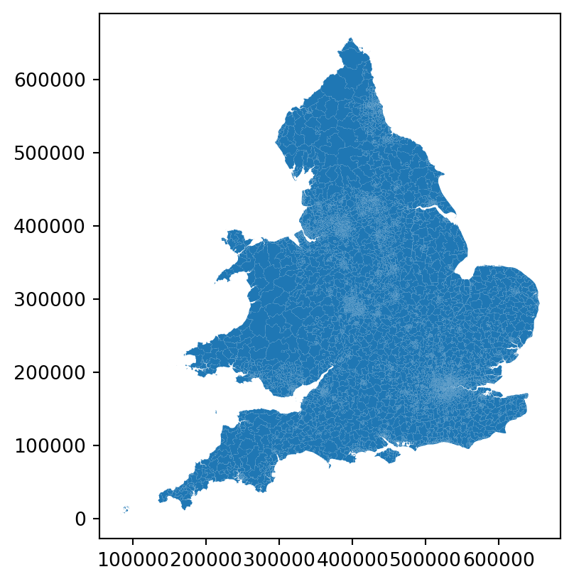
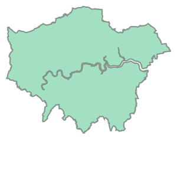
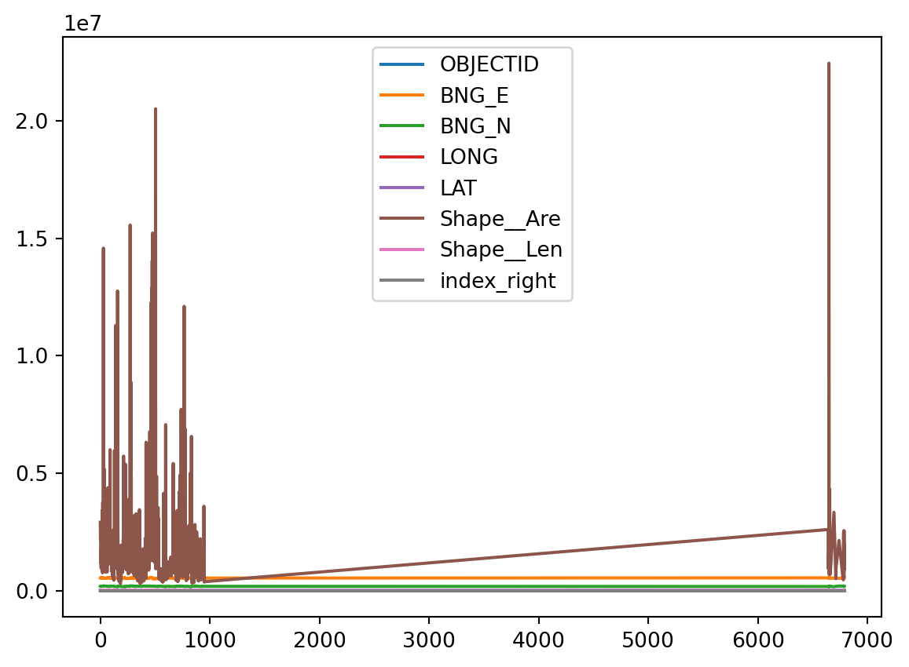
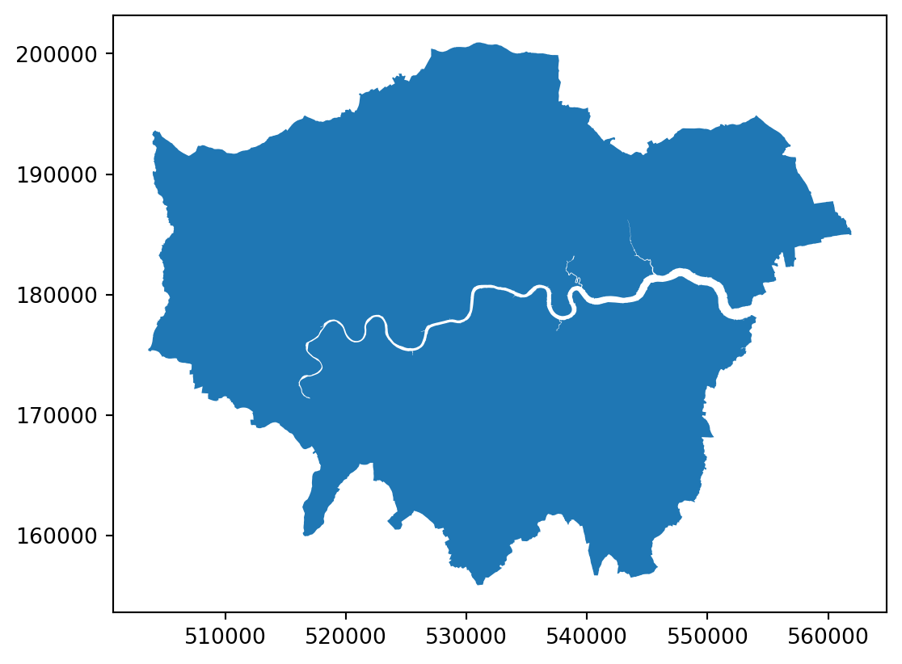
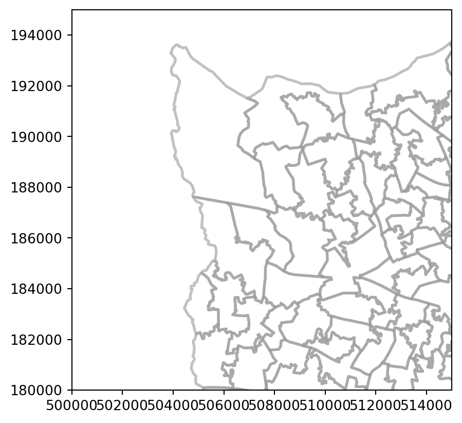
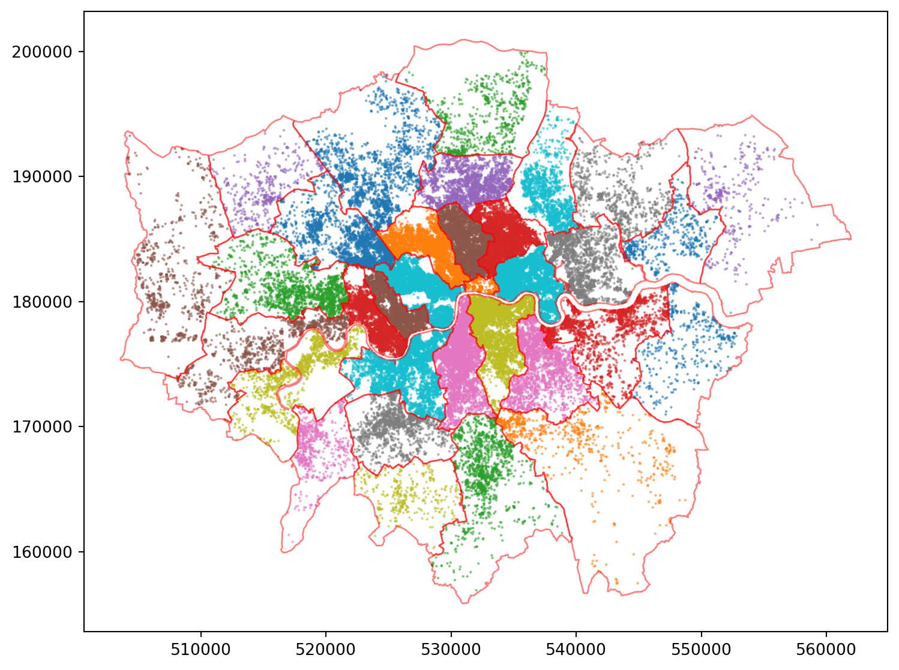

import os
import numpy as np
import pandas as pd
import geopandas as gpd
import seaborn as sns
import matplotlib.cm as cm
import matplotlib.pyplot as pltPractical 10: Visualisation
Linking & Visualising Data
| Complete | Part 1: Foundations | Part 2: Data | Part 3: Analysis | |
|---|---|---|---|---|
| 90% | ▓▓▓▓▓▓▓▓ | ▓▓▓▓▓▓ | ▓▓▓▓▓░ | 10/10 |
Important
This practical focusses on two key bits of implementation: visualisation and data linkage! You will have seen quite a bit of each of these across the preceding three to four weeks, but they were picked up in an ad-hoc way, here we try to systematise things a bit.
🔗 Connections
Here we’re trying to tidy up the loose ends. You’ve already worked with basic data visualisations in Seaborn and Matplotlib (including (geo)panda’s plot function), but we want you to have a better sense of how that works as part of a coherent – if altogether rather complex and overwhelming – approach to managing a data visualisation. You’ve also already seen examples of joins and spatial joins before but, again, we just want to review them more formally now.
1 Preamble
import os
from requests import get
from urllib.parse import urlparse
def cache_data(src:str, dest:str) -> str:
"""Downloads and caches a remote file locally.
The function sits between the 'read' step of a pandas or geopandas
data frame and downloading the file from a remote location. The idea
is that it will save it locally so that you don't need to remember to
do so yourself. Subsequent re-reads of the file will return instantly
rather than downloading the entire file for a second or n-th itme.
Parameters
----------
src : str
The remote *source* for the file, any valid URL should work.
dest : str
The *destination* location to save the downloaded file.
Returns
-------
str
A string representing the local location of the file.
"""
url = urlparse(src) # We assume that this is some kind of valid URL
fn = os.path.split(url.path)[-1] # Extract the filename
dfn = os.path.join(dest,fn) # Destination filename
# Check if dest+filename does *not* exist --
# that would mean we have to download it!
if not os.path.isfile(dfn) or os.path.getsize(dfn) < 1:
print(f"{dfn} not found, downloading!")
# Convert the path back into a list (without)
# the filename -- we need to check that directories
# exist first.
path = os.path.split(dest)
# Create any missing directories in dest(ination) path
# -- os.path.join is the reverse of split (as you saw above)
# but it doesn't work with lists... so I had to google how
# to use the 'splat' operator! os.makedirs creates missing
# directories in a path automatically.
if len(path) >= 1 and path[0] != '':
os.makedirs(os.path.join(*path), exist_ok=True)
# Download and write the file
with open(dfn, "wb") as file:
response = get(src)
file.write(response.content)
print('Done downloading...')
else:
print(f"Found {dfn} locally!")
return dfn2 Spatial Joins (Recap)
2.1 Load Geodata
A lot of useful geo-data can be accessed from the GeoPortal. And see also my discussion on lookup tables.
spath = 'https://github.com/jreades/fsds/blob/master/data/src/' # source path
ddir = os.path.join('data','geo') # destination directory
water = gpd.read_file( cache_data(spath+'Water.gpkg?raw=true', ddir) )
boros = gpd.read_file( cache_data(spath+'Boroughs.gpkg?raw=true', ddir) )
green = gpd.read_file( cache_data(spath+'Greenspace.gpkg?raw=true', ddir) )Found data/geo/Water.gpkg locally!
Found data/geo/Boroughs.gpkg locally!
Found data/geo/Greenspace.gpkg locally!msoas = gpd.read_file( cache_data(spath+'Middle_Layer_Super_Output_Areas__December_2011__EW_BGC_V2-shp.zip?raw=true', ddir) )
msoas.plot();Found data/geo/Middle_Layer_Super_Output_Areas__December_2011__EW_BGC_V2-shp.zip locally!
msoas.sample(3)| OBJECTID | MSOA11CD | MSOA11NM | MSOA11NMW | BNG_E | BNG_N | LONG | LAT | Shape__Are | Shape__Len | geometry | |
|---|---|---|---|---|---|---|---|---|---|---|---|
| 6592 | 6593 | E02006734 | Worcester 001 | Worcester 001 | 384974 | 257845 | -2.22135 | 52.21862 | 4.544143e+06 | 11177.509085 | POLYGON ((385548.000 258720.406, 385839.819 25... |
| 4821 | 4822 | E02004930 | St Albans 007 | St Albans 007 | 517022 | 210632 | -0.30498 | 51.78213 | 1.443424e+07 | 19701.770584 | POLYGON ((518548.281 212950.402, 518553.781 21... |
| 6481 | 6482 | E02006623 | Worthing 003 | Worthing 003 | 511678 | 104975 | -0.41547 | 50.83353 | 1.435652e+06 | 8182.321431 | POLYGON ((512686.730 105645.721, 512562.698 10... |
2.2 Select London MSOAs
🔗 Connections
One thing to remember here is that computers are exact. So if you say that the selection should only be of MSOAs within London then you actually need to think about whether a shared border qualifies as ‘within’. Watch the lectures again if you’re unsure, but that’s why here we take this slightly clunk approach of buffering the London boundary before doing the selection.
Union
As we don’t have a boundary file for London, we can generate use using the unary_union operator (as we do here) or using the dissolve() approach. Consider the pros and cons of each approach in terms of performance, output format, and leigibility.
So here’s approach 1, which is a function call (on which we call plot):
boros.dissolve().plot();
And here’s approach 2, which is an attribute and returns a polygon (so no reason to call plot, but it’s come back without the rest of the data frame!):
boros.unary_union
🔗 Connections
Notice how we’re also demonstrating some additional ways of plotting ‘on the fly’ (without generating a data frame) as well as reminding you how to zoom in/out.
ldn = gpd.GeoDataFrame(gpd.GeoSeries(data=boros.unary_union)).rename(columns={0:'geometry'}).set_geometry("geometry")
ldn = ldn.set_crs(epsg=27700)
ax = ldn.plot(facecolor=(.5, .5, .9, .5));
msoas.plot(ax=ax, facecolor='none', edgecolor=(.6, .6, .6, .6))
ax.set_xlim(500000, 515000)
ax.set_ylim(180000, 195000);
Buffer
In order to ensure that we get all MSOAs within London we will buffer the boundary by 250m. If cover were easier to use then that option might be preferable.
ldn['buffered'] = ldn.geometry.???(???)
ldn = ldn.set_geometry('buffered').set_crs(epsg=27700)
ax = ldn.plot(facecolor=(.5, .5, .9, .5))
msoas.plot(ax=ax, facecolor='none', edgecolor=(.6, .6, .6, .6))
ax.set_xlim(500000, 515000)
ax.set_ylim(180000, 195000);ldn['buffered'] = ldn.geometry.buffer(250)
ldn = ldn.set_geometry('buffered').set_crs(epsg=27700)
ax = ldn.plot(facecolor=(.5, .5, .9, .5))
msoas.plot(ax=ax, facecolor='none', edgecolor=(.6, .6, .6, .6))
ax.set_xlim(500000, 515000)
ax.set_ylim(180000, 195000);
Spatial Join
Here’s our first spatial join. By default it will be an inner join because we want to drop everything that doesn’t line up between the two data sets (i.e. don’t keep the thousands of other MSOAs).
ldn_msoas = gpd.sjoin(msoas, ldn, predicate='???', how='inner')
ldn_msoas.head(2)ldn_msoas = gpd.sjoin(msoas, ldn, predicate='within', how='inner')
ldn_msoas.head(2)| OBJECTID | MSOA11CD | MSOA11NM | MSOA11NMW | BNG_E | BNG_N | LONG | LAT | Shape__Are | Shape__Len | geometry_left | index_right | geometry_right | |
|---|---|---|---|---|---|---|---|---|---|---|---|---|---|
| 0 | 1 | E02000001 | City of London 001 | City of London 001 | 532384 | 181355 | -0.093490 | 51.51561 | 2.906361e+06 | 8936.818478 | POLYGON ((532135.138 182198.131, 532158.250 18... | 0 | POLYGON ((528150.200 159979.200, 528100.900 16... |
| 1 | 2 | E02000002 | Barking and Dagenham 001 | Barking and Dagenham 001 | 548267 | 189685 | 0.138756 | 51.58652 | 2.166163e+06 | 8150.405928 | POLYGON ((548881.563 190845.265, 548881.125 19... | 0 | POLYGON ((528150.200 159979.200, 528100.900 16... |
Plot
ldn_msoas.plot()
Hmmmm, not quite what you were expecting? See if you can figure out from the list of columns and the documentation for set_geometry what is going wrong?
ax = ldn_msoas.set_geometry('geometry_left').plot(linewidth=2, facecolor='none', edgecolor=(.6, .6, .6, .6))
ax.set_xlim(500000, 515000)
ax.set_ylim(180000, 195000);
ldn_msoas = ldn_msoas.rename(columns={'geometry_left':'geometry'}).set_geometry('geometry')ldn_msoas.drop(columns='geometry_right', inplace=True)We no longer really need to keep the full MSOA data set hanging about.
try:
del(msoas)
except NameError:
print("msoas already deleted.")Question
- Can you explain why the outputs of the
dissolveandunary_unionlook differnet? And use that as the basis for explaining why they are different?
- How do you know that the units for the buffering operation are metres? 250 could be anything right?
- Why do we need to buffer the London geometry before performing the within spatial join?
Answer
- Can you explain why the outputs of the
dissolveandunary_unionlook differnet? And use that as the basis for explaining why they are different?
Dissolve is a method call that returns a new GeoDataFrame, while unary_union is a spatial operation that returns a primitive geometry. So we could capture the output of dissolve and just r ename the columns, but from unary_union we need to write the primitive into a new GeoDataFrame as a geometry column.
- How do you know that the units for the buffering operation are metres? 250 could be anything right?
It depends on the CRS! EPSG:27700 uses metres so the buffer operation is in metres.
- Why do we need to buffer the London geometry before performing the within spatial join?
Because there may be small precision issues such that the MSOA borders cross the ‘border’ of the Thames and therefore no longer fall entirely within the London geometry. Try it yourself by changing the buffer amount!
2.3 Append Names
We don’t actually make use of these in this session, but both operations could be relevant to your final reports:
- The Borough > Subregion mapping could help you to group your data into larger sets so that your resulst become more reobust. it also connects us to long-run patterns of socio-economic development in London.
- The MSOA Names data set gives you something that you could use to label one or more ‘neighbourhoods’ on a map with names that are relevant. So rather than talking about “As you can see, Sutton 003, is…”, you can write “The Wrythe neighbourhood [or area] of Sutton is significantly different from the surrounding areas…”
They also usefully test your understanding of regular expressions and a few other aspects covered in previous weeks.
Replace
You’ve done this before: notice that the MSOA Name contains the Borough name with a space and some digits at the end. Use a regex (in str.replace()) to extract the LA name from the MSOA name. See if you do this without having to find your previous answer!
ldn_msoas['Borough'] = ldn_msoas.MSOA11NM.str.replace(r'???','',regex=True)
# Just check results look plausible; you should have:
# - 33 boroughs
# - A df shape of 983 x 13
print(ldn_msoas.Borough.unique())
print(f"There are {len(ldn_msoas.Borough.unique())} boroughs.")
print(f"Overall shape of data frame is {' x '.join([str(x) for x in ldn_msoas.shape])}")ldn_msoas['Borough'] = ldn_msoas.MSOA11NM.str.replace(r' \d+$','',regex=True)
# Just check results look plausible; you should have:
# - 33 boroughs
# - A df shape of 983 x 13
print(ldn_msoas.Borough.unique())
print(f"There are {len(ldn_msoas.Borough.unique())} boroughs.")
print(f"Overall shape of data frame is {' x '.join([str(x) for x in ldn_msoas.shape])}")['City of London' 'Barking and Dagenham' 'Barnet' 'Bexley' 'Brent'
'Bromley' 'Camden' 'Croydon' 'Ealing' 'Enfield' 'Greenwich' 'Hackney'
'Hammersmith and Fulham' 'Haringey' 'Harrow' 'Havering' 'Hillingdon'
'Hounslow' 'Islington' 'Kensington and Chelsea' 'Kingston upon Thames'
'Lambeth' 'Lewisham' 'Merton' 'Newham' 'Redbridge' 'Richmond upon Thames'
'Southwark' 'Sutton' 'Tower Hamlets' 'Waltham Forest' 'Wandsworth'
'Westminster']
There are 33 boroughs.
Overall shape of data frame is 983 x 13Merge
The House of Commons Library provides a MSOA Names data set that contains locally-relevant names applied to MSOAs. These seek to connect the Census geography (OA > LSOA > MSOA > LA) to a loosely-defined ‘neighbourhood’.
msoa_nms = pd.read_csv( cache_data('https://houseofcommonslibrary.github.io/msoanames/MSOA-Names-1.20.csv', ddir) )Found data/geo/MSOA-Names-1.20.csv locally!print(msoa_nms.columns.values)
msoa_nms.sample(3, random_state=42)['msoa11cd' 'msoa11nm' 'msoa11nmw' 'msoa11hclnm' 'msoa11hclnmw' 'Laname']| msoa11cd | msoa11nm | msoa11nmw | msoa11hclnm | msoa11hclnmw | Laname | |
|---|---|---|---|---|---|---|
| 4512 | E02004616 | Cotswold 002 | Cotswold 002 | Moreton & Stow-on-the-Wold | NaN | Cotswold |
| 4660 | E02004768 | Havant 007 | Havant 007 | Waterlooville East | NaN | Havant |
| 1038 | E02001074 | Manchester 030 | Manchester 030 | Fallowfield West & Whalley Range South | NaN | Manchester |
Now that you’ve loaded the msoa_nms data you need to merge it with our ldn_msoas. You will need to deal with the fact that the left and right fields have different names and may also want to think about the how of the merge. In this case, the result of the merge should be a GeoDataFrame, but this is not always guaranteed so you may want to double-check or run multiple tests before assuming that you’ll get back a geographically aware object.
msoas = pd.merge(ldn_msoas, msoa_nms, left_on='??', right_on='??', how='??')
print(f"MSOAs shape is {' x '.join([str(x) for x in msoas.shape])}.")
print(f"Resulting class is a {type(msoas).__name__}.") # You should check this -- result isn't always be a GeoDataFrame
msoas.sample(3, random_state=42)[['OBJECTID','MSOA11CD','MSOA11NM','msoa11hclnm']]msoas = pd.merge(ldn_msoas, msoa_nms, left_on='MSOA11CD', right_on='msoa11cd', how='inner')
print(f"MSOAs shape is {' x '.join([str(x) for x in msoas.shape])}.")
print(f"Resulting class is a {type(msoas).__name__}.") # You should check this -- result isn't always be a GeoDataFrame
msoas.sample(3, random_state=42)[['OBJECTID','MSOA11CD','MSOA11NM','msoa11hclnm']]MSOAs shape is 983 x 19.
Resulting class is a GeoDataFrame.| OBJECTID | MSOA11CD | MSOA11NM | msoa11hclnm | |
|---|---|---|---|---|
| 810 | 811 | E02000841 | Sutton 002 | St Helier South |
| 801 | 802 | E02000832 | Southwark 026 | Nunhead North |
| 813 | 814 | E02000844 | Sutton 005 | The Wrythe |
Your result should be:
| OBJECTID | MSOA11CD | MSOA11NM | msoa11hclnm | |
|---|---|---|---|---|
| 810 | 811 | E02000841 | Sutton 002 | St Helier South |
| 801 | 802 | E02000832 | Southwark 026 | Nunhead North |
| 813 | 814 | E02000844 | Sutton 005 | The Wrythe |
Map
Set up a mapping dict here so that you can apply it as part of the groupby operation below (you should have 33 keys when done):
mapping = {}
for b in ['Enfield','Waltham Forest','Redbridge','Barking and Dagenham','Havering','Greenwich','Bexley']:
mapping[b]='Outer East and North East'
for b in ['Haringey','Islington','Hackney','Tower Hamlets','Newham','Lambeth','Southwark','Lewisham']:
mapping[b]='Inner East'
for b in ['Bromley','Croydon','Sutton','Merton','Kingston upon Thames']:
mapping[b]='Outer South'
for b in ['Wandsworth','Kensington and Chelsea','Hammersmith and Fulham','Westminster','Camden']:
mapping[b]='Inner West'
for b in ['Richmond upon Thames','Hounslow','Ealing','Hillingdon','Brent','Harrow','Barnet','City of London']:
mapping[b]='Outer West and North West'
print(len(mapping.keys()))33msoas['Subregion'] = msoas.Borough.map(???)msoas['Subregion'] = msoas.Borough.map(mapping)Tidy Up
msoas.columns.to_list()['OBJECTID',
'MSOA11CD',
'MSOA11NM',
'MSOA11NMW',
'BNG_E',
'BNG_N',
'LONG',
'LAT',
'Shape__Are',
'Shape__Len',
'geometry',
'index_right',
'Borough',
'msoa11cd',
'msoa11nm',
'msoa11nmw',
'msoa11hclnm',
'msoa11hclnmw',
'Laname',
'Subregion']to_drop = ['MSOA11CD','MSOA11NM','MSOA11NMW','LONG','LAT','Shape__Are','Shape__Len','index_right',
'Laname','msoa11hclnmw','msoa11nmw']
msoas.drop(columns=to_drop, inplace=True)
print(msoas.shape)(983, 9)And Save
msoas.to_parquet(os.path.join('data','geo','London_MSOA_Names.geoparquet'))2.4 Load InsideAirbnb Data
host = 'http://orca.casa.ucl.ac.uk'
path = '~jreades/data'
ymd = '2023-09-06'
listings = gpd.read_parquet( cache_data(f'{host}/{path}/{ymd}-listings.geoparquet', ddir) )
listings = listings.to_crs(epsg=27700)
print(f"Data frame is {listings.shape[0]:,} x {listings.shape[1]}")Found data/geo/2023-09-06-listings.geoparquet locally!
Data frame is 85,134 x 31listings = listings.to_crs('epsg:27700')Spatial Join
Associate LA (Local Authority) names to the listings using a spatial join, but notice the how here:
gdf_la = gpd.sjoin(listings, ???, predicate='???', how='left')
print(gdf_la.columns.to_list())gdf_la = gpd.sjoin(listings, boros, predicate='within', how='left')
print(gdf_la.columns.to_list())['listing_url', 'last_scraped', 'name', 'description', 'host_id', 'host_name', 'host_since', 'host_location', 'host_is_superhost', 'host_listings_count', 'host_total_listings_count', 'host_verifications', 'latitude', 'longitude', 'property_type', 'room_type', 'accommodates', 'bathrooms_text', 'bedrooms', 'beds', 'amenities', 'price', 'minimum_nights', 'maximum_nights', 'availability_365', 'number_of_reviews', 'first_review', 'last_review', 'review_scores_rating', 'reviews_per_month', 'geometry', 'index_right', 'NAME', 'GSS_CODE', 'HECTARES', 'NONLD_AREA', 'ONS_INNER']Tidy Up
gdf_la.drop(columns=['index_right','HECTARES','NONLD_AREA','ONS_INNER'], inplace=True)You’ll need to look closely to check that the value_counts output squares with your expectations. If you don’t get 33 then there’s an issue:
if len(gdf_la.NAME.unique()) == 33:
print("All good...")
else:
print("Need to run the next section of code...")
print(f"Now there are... {len(gdf_la.NAME.unique())} boroughs?")
gdf_la.NAME.value_counts(dropna=False)All good...Find Problematic Listings
If you were told that you need to run the next sectin of code then see if you can work out what happened…
try:
print(gdf_la[gdf_la.NAME.isna()].sample(2)[['name', 'NAME']])
ax = gdf_la[gdf_la.NAME.isna()].plot(figsize=(9,6), markersize=5, alpha=0.5)
boros.plot(ax=ax, edgecolor='r', facecolor='None', alpha=0.5);
except ValueError as e:
passIn short: in some cases there may be records that fall outside of London because of Airbnb’s shuffling approach:
gdf_la.drop(index=gdf_la[gdf_la.NAME.isna()].index, axis=1, inplace=True)
print(f"Data frame is {gdf_la.shape[0]:,} x {gdf_la.shape[1]}")Data frame is 85,134 x 33You should now have {python} f"{gdf_la.shape[0]:,}" records.
Check
ax = gdf_la.plot(column='NAME', markersize=0.5, alpha=0.5, figsize=(9,7))
boros.plot(ax=ax, edgecolor='r', facecolor='None', alpha=0.5);
Save
gdf_la.to_parquet(os.path.join('data','geo','Listings_with_LA.geoparquet'))- Do you understand the difference between
how='inner'andhow='left'?
- Do you understand the difference between
how='inner'andhow='left'?
Left joins preserve all records on the left table regardless of whether they match something in the right table. In this case, because it’s a spatial join we keep the listings regardless of whether they fall within the London boroughs. Inner joins preserve only the records that match between left and right, so in this case if you did a spatial inner join you’d only get the records that fall within a London borough. Right joins do about what you’d expect (not very helpful in this example). Outer joins preserve everything in both tables which, in a spatial context, would probably be a little hard to interpret.
2.5 Create LA Data
Select LA
Select a LA that is relevant to you to explore further…
LA = 'Waltham Forest'Spatial Join
The first thing we want to do is join MSOA identifiers to each listing. In both cases we want to constrain the data to only be for ‘our’ LA of interest:
msoadf = gpd.sjoin(
gdf_la[gdf_la.NAME==LA].reset_index(),
msoas[msoas.Borough==LA], predicate='within')Aggregate
Now aggregate the data by MSOA, deriving median price and a count of the listings:
msoagrdf = msoadf.groupby('msoa11nm').agg({'price':['median','count']}).reset_index()msoagrdf.sample(3, random_state=42)| msoa11nm | price | ||
|---|---|---|---|
| median | count | ||
| 9 | Waltham Forest 010 | 60.0 | 35 |
| 25 | Waltham Forest 026 | 69.5 | 86 |
| 8 | Waltham Forest 009 | 64.0 | 47 |
You should get something like the below (if you’re using Waltham Forest):
| msoa11nm | price | ||
|---|---|---|---|
| median | count | ||
| 9 | Waltham Forest 010 | 60.0 | 35 |
| 25 | Waltham Forest 026 | 69.5 | 86 |
| 8 | Waltham Forest 009 | 64.0 | 47 |
Resolve Columns
Which level value is easier to use? 0? or 1?
msoagrdf.columns = msoagrdf.columns.get_level_values(1)
msoagrdf.head()| median | count | ||
|---|---|---|---|
| 0 | Waltham Forest 001 | 97.0 | 17 |
| 1 | Waltham Forest 002 | 58.0 | 14 |
| 2 | Waltham Forest 003 | 89.0 | 7 |
| 3 | Waltham Forest 004 | 43.5 | 8 |
| 4 | Waltham Forest 005 | 50.0 | 12 |
Fix the missing column name:
msoagrdf.rename(columns={'':'msoa11nm', 'count':'listings'}, inplace=True)
msoagrdf.head()| msoa11nm | median | listings | |
|---|---|---|---|
| 0 | Waltham Forest 001 | 97.0 | 17 |
| 1 | Waltham Forest 002 | 58.0 | 14 |
| 2 | Waltham Forest 003 | 89.0 | 7 |
| 3 | Waltham Forest 004 | 43.5 | 8 |
| 4 | Waltham Forest 005 | 50.0 | 12 |
Join (Again)
Here we see the difference between merge and join. You’ll notice that join operates by taking one data frame as the implicit ‘left’ table (the one which calls join) while the one that is passed to the join function is, implicitly, the ‘right’ table. Join operates only using indexes, so you’ll need to insert the code to specify the same index on both data frames, but this can be done on-the-fly as part of the joining operation:
msoa_gdf = msoagrdf.set_index('msoa11nm').join(
msoas[msoas.Borough==LA].set_index('msoa11nm'),
rsuffix='_r')
msoa_gdf.head(3)| median | listings | OBJECTID | BNG_E | BNG_N | geometry | Borough | msoa11cd | msoa11hclnm | Subregion | |
|---|---|---|---|---|---|---|---|---|---|---|
| msoa11nm | ||||||||||
| Waltham Forest 001 | 97.0 | 17 | 863 | 537936 | 194880 | POLYGON ((537919.442 195742.428, 538051.250 19... | Waltham Forest | E02000895 | Chingford Green West | Outer East and North East |
| Waltham Forest 002 | 58.0 | 14 | 864 | 539350 | 194516 | POLYGON ((539172.688 195540.000, 539696.813 19... | Waltham Forest | E02000896 | Chingford Green East | Outer East and North East |
| Waltham Forest 003 | 89.0 | 7 | 865 | 539355 | 193522 | POLYGON ((538862.624 194017.438, 539001.125 19... | Waltham Forest | E02000897 | Friday Hill | Outer East and North East |
Resolve Geodata
You need to add a command in order to help python recognise that this should be a GeoDataFrame:
msoa_gdf = msoa_gdf.set_geometry('geometry')msoa_gdf.plot(column='median', legend=True, figsize=(8,8));You should get something like:

Save
Just so that we can pick up here without having to re-run all the preceding cells.
msoa_gdf.to_parquet(os.path.join('data','geo',f'{LA}-MSOA_data.geoparquet'))Question
- Do you understand the differences between
pd.mergeanddf.join? andgpd.sjoin?
- Do you understand why it may be necessary to
set_geometryin some cases?
Answer
- Do you understand the differences between
pd.mergeanddf.join? andgpd.sjoin?
Obviously one of these three is spatial in nature, but beyond that there is a lot of overlap and great deal depends on the logic or the linkage. join is relatively limited in functionality but is fairly clear about the relationships: if the indexes don’t match it doesn’t produce anything. merge is actually (functionally, at least) more similar to sjoin than sjoin is to join – this is slightly confusing but can probably be traced back to Pandas’ origins in panel data research whereas Geopandas’ is more technically correct in its terminology because of the influence of GIS.
- Do you understand why it may be necessary to
set_geometryin some cases?
Joins are DataFrame functionality and so are unaware of GeoDataFrames (so the return type devolves to a DataFrame), whereas merges seem to preserve the child class type and mean that a GeoDataFrame is returned even thought this is also a Pandas utility function.